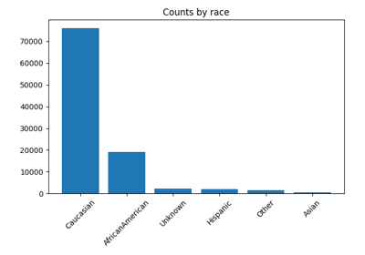
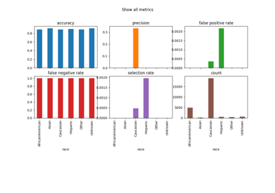
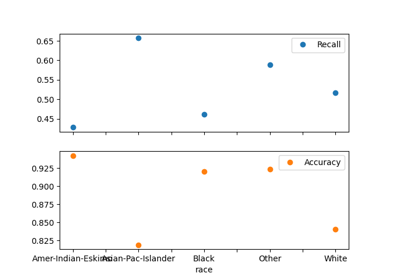
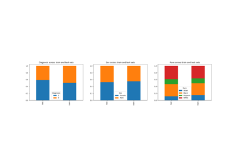
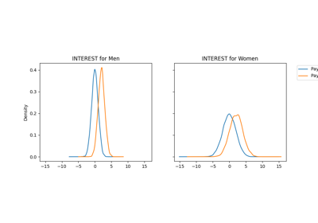

Example Notebooks#
Here’s a list of examples on how to use the library. We will be adding more examples soon. If you’re interested in contributing to existing notebooks or adding new ones please consult the guide on Contributing example notebooks.
Note
The Fairlearn API is still evolving, so if you want to run these on your local Fairlearn installation, make sure to match versions.

Value counts


MetricFrame visualizations


Basics & Model Specification of AdversarialFairnessClassifier
Basics & Model Specification of AdversarialFairnessClassifier



Plotting Metrics with Errors


Intersectionality in Mental Health Care
Intersectionality in Mental Health Care

Credit Loan Decisions